园林著作对古今建筑之影响
展示古典造园著作如何通过核心理念影响古代名园及现代景观设计
造园巨匠与文化名人
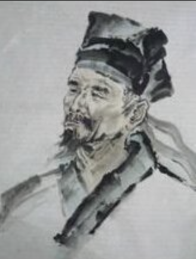
虽由人作，宛自天开
计成 (明代造园宗师)
核心成就：著有世界首部系统造园专著《园冶》，提出“虽由人作，宛自天开”“巧于因借，精在体宜”。
风格：以画意入造园，强调因地制宜。
风格：以画意入造园，强调因地制宜。
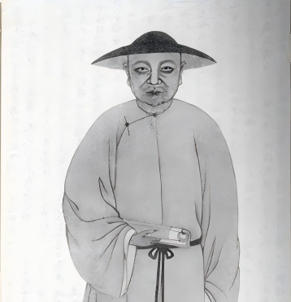
土石相间，浑然天成
张南垣 (明末清初叠山大家)
核心成就：改变传统“高架叠缀”风格，首创“土石相间、因形造势”的自然叠山法。
风格：假山浑然若真山，意境苍茫。
风格：假山浑然若真山，意境苍茫。
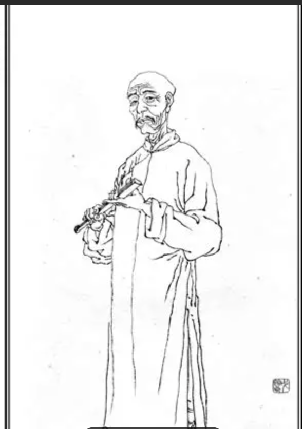
不用铁活，数百年不散
戈裕良 (清代叠山巨匠)
核心成就：代表作苏州环秀山庄假山（独步江南）；首创“钩带法”叠石，不用铁活固定。
风格：兼取气势与精雕，咫尺山林气象万千。
风格：兼取气势与精雕，咫尺山林气象万千。
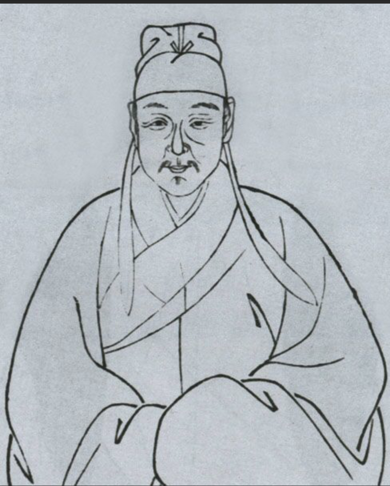
园灵之胜，全在乎雅
文震亨 (明代理论家)
核心成就：著《长物志》，系统总结文人园林的审美标准与布置原则。
风格：重雅致、忌俗艳，强调园林是修身养性的空间。
风格：重雅致、忌俗艳，强调园林是修身养性的空间。
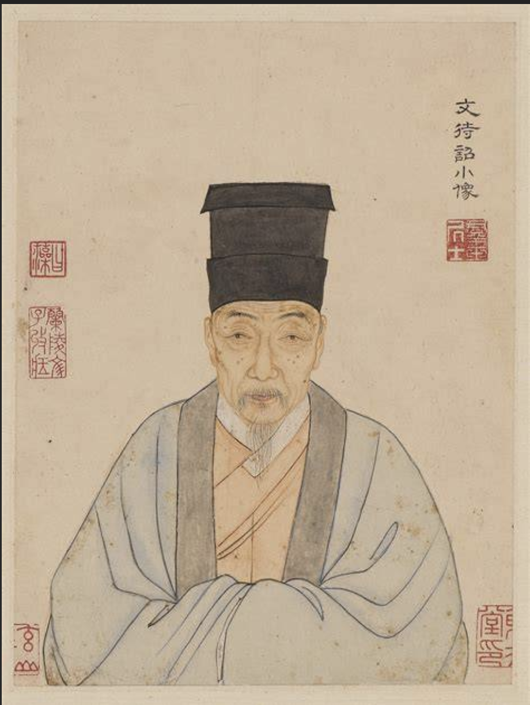
笔墨意蕴，在山水间
文徵明 (吴门画派领袖)
核心关联：参与拙政园早期规划，绘制《王氏拙政园图》。
影响：其山水画笔意直接影响园中布局，奠定“诗画入园”基调。
影响：其山水画笔意直接影响园中布局，奠定“诗画入园”基调。
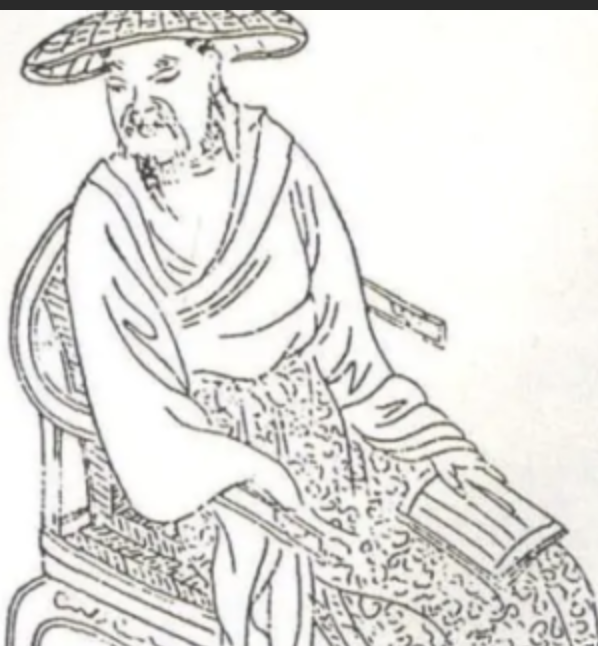
便面窗中，别有天地
李渔 (戏曲家/美学家)
核心关联：著《闲情偶寄》，对园林建筑有独到见解。自造金陵芥子园，设计“便面窗”等框景。
风格：重实用与趣味。
风格：重实用与趣味。

天下奇石，尽聚艮岳
宋徽宗赵佶 (北宋皇帝)
核心关联：主持营造“艮岳”，集天下奇石名花于一园，将宫廷画院审美融入造园。
影响：奠定了后世皇家园林范式。
影响：奠定了后世皇家园林范式。
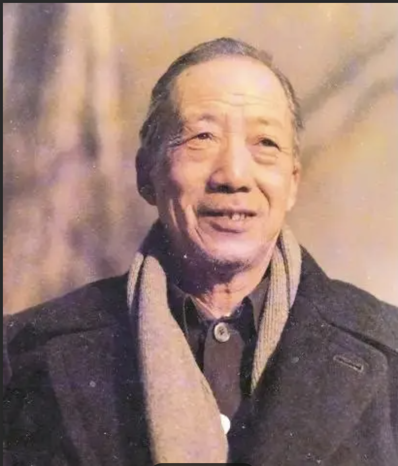
园以文传，诗画是魂
陈从周 (现代园林大家)
核心成就：著《说园》；主持修复网师园等；以殿春簃为蓝本设计纽约大都会博物馆“明轩”。
风格：强调“园以文传”。
风格：强调“园以文传”。
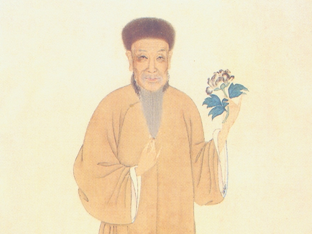
中隐于园，闲适自得
白居易 (唐代诗人/造园实践者)
核心成就：营建洛阳履道里宅园，提出“中隐”园林美学思想，著《池上篇》记园居之乐。
风格：简素自然，以水竹为核心，重精神栖居之趣。
风格：简素自然，以水竹为核心，重精神栖居之趣。
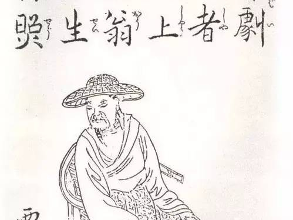
行到水穷处，坐看云起时
王维 (唐代诗人/辋川别业造园者)
核心成就：营建蓝田辋川别业，将山水诗画意境融入园林布局，开创“诗画入园”先河。
风格：空灵悠远，融禅意于山水，自然天成。
风格：空灵悠远，融禅意于山水，自然天成。
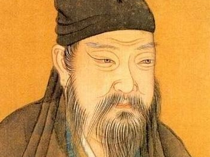
独乐园中，自得其乐
司马光 (北宋史学家/造园家)
核心成就：营建洛阳独乐园，著《独乐园记》，园以“读书、著述”为核心功能。
风格：简素淡雅，以草堂、书屋为主体，重文人治学之趣。
风格：简素淡雅，以草堂、书屋为主体，重文人治学之趣。
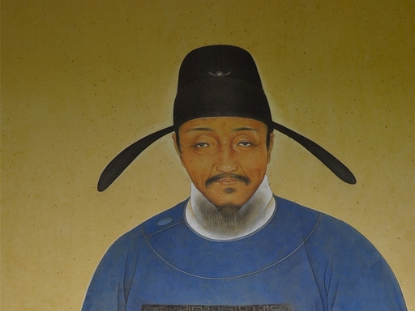
宁可食无肉，不可居无竹
苏轼 (北宋文学家/园林营造者)
核心成就：主持杭州西湖苏堤营造，营建黄州东坡雪堂，提出“竹石为友”的造园审美。
风格：豪放洒脱，融诗情于山水，不拘一格。
风格：豪放洒脱，融诗情于山水，不拘一格。
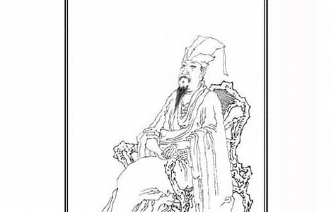
石不能言最可人
米万钟 (北宋书画家/赏石造园大家)
核心成就：开创文人赏石文化，营建襄阳米氏园，以奇石为核心造景，著《研山铭》记石之美。
风格：尚奇好古，以石入园，追求天然野趣。
风格：尚奇好古，以石入园，追求天然野趣。
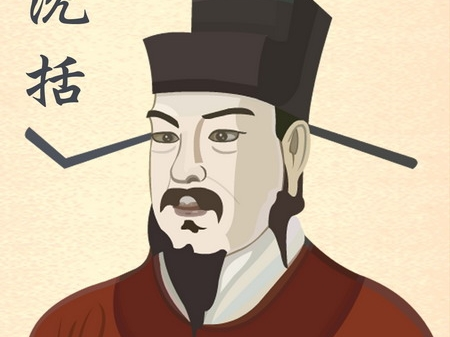
书画同源，园画一体
赵孟頫 (元代书画家/造园理论家)
核心成就：将书画笔墨意趣融入园林布局，参与吴兴莲花庄营建，著《吴兴山水图》佐造园。
风格：典雅精致，融书画章法于园景，层次分明。
风格：典雅精致，融书画章法于园景，层次分明。
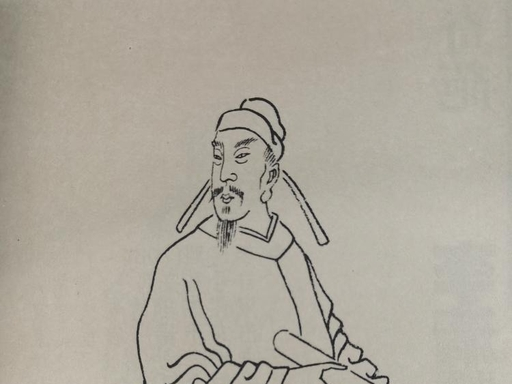
一河两岸，疏淡空灵
倪瓒 (元代画家/极简造园代表)
核心成就：营建无锡清閟阁，开创极简主义造园风格，园景如“一水两岸”山水画。
风格：疏淡萧散，以简驭繁，意境高远脱俗。
风格：疏淡萧散，以简驭繁，意境高远脱俗。
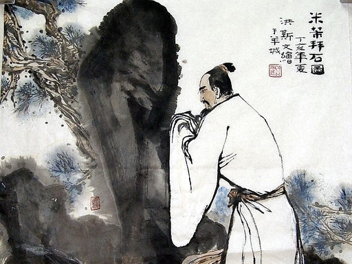
弇山园中，文心雕龙
王世贞 (明代文学家/造园家)
核心成就：营太仓弇山园，著《弇山园记》，园藏万卷藏书，融学术研究与园居生活于一体。
风格：宏大精致，亭台错落，重文化底蕴。
风格：宏大精致，亭台错落，重文化底蕴。
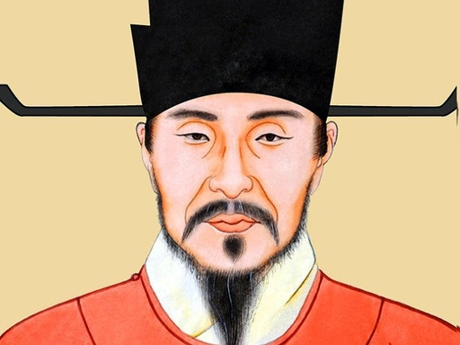
南北宗论，画意入园
董其昌 (明代书画家/造园审美理论家)
核心成就：提出山水画“南北宗”理论，指导松江董氏园营建，以“南宗”清逸画风入造园。
风格：淡雅清逸，意境深远，重笔墨韵味。
风格：淡雅清逸，意境深远，重笔墨韵味。
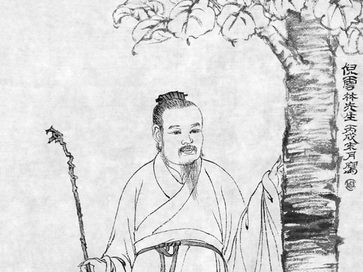
小昆山中，隐逸清修
陈继儒 (明代隐士/造园理论家)
核心成就：隐居松江小昆山，营建顽仙庐，著《小窗幽记》总结园居修身之道。
风格：隐逸淡泊，园景简约，重精神清修。
风格：隐逸淡泊，园景简约，重精神清修。
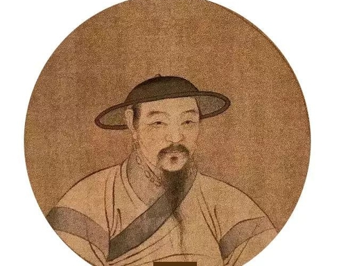
湖心亭中，看雪听雨
张岱 (明末文学家/园居美学大家)
核心成就：营绍兴快园，著《陶庵梦忆》记江南名园之美，推崇“精致生活”的园居美学。
风格：考究雅致，融生活美学于园景，处处见巧思。
风格：考究雅致，融生活美学于园景，处处见巧思。
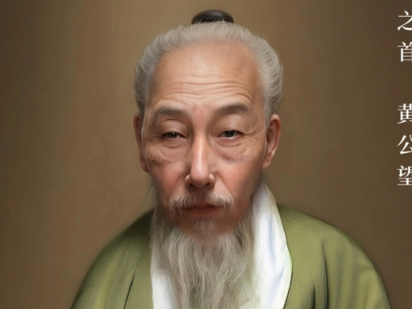
寓园之中，气节长存
祁彪佳 (明末政治家/造园家)
核心成就：营绍兴寓园，著《越中园亭记》梳理江南园林脉络，园景彰显文人气节。
风格：清雅高洁，布局方正，园如其人刚正不阿。
风格：清雅高洁，布局方正，园如其人刚正不阿。
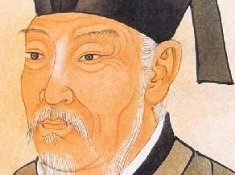
随园之中，性灵自得
袁枚 (清代诗人/随园主人)
核心成就：购建南京随园，著《随园诗话》《随园食单》，将“性灵说”融入园居生活。
风格：自然随性，不拘礼法，重生活本真之趣。
风格：自然随性，不拘礼法，重生活本真之趣。
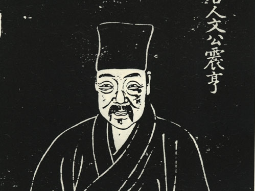
浮生若梦，园林寄情
沈复 (清代文学家/园居生活家)
核心成就：著《浮生六记》，记沧浪亭等园居雅事，详述造园叠石、盆栽之巧。
风格：细腻婉约，以园写情，意境悠远绵长。
风格：细腻婉约，以园写情，意境悠远绵长。
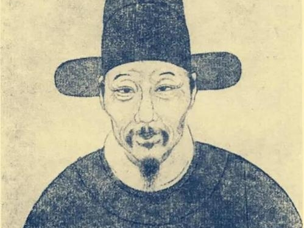
片石山房，画入叠山
石涛 (清代画僧/叠山宗师)
核心成就：设计扬州片石山房假山，以画理入叠山，著《苦瓜和尚画语录》阐发造园意境。
风格：奇崛苍茫，咫尺山林，画意盎然。
风格：奇崛苍茫，咫尺山林，画意盎然。
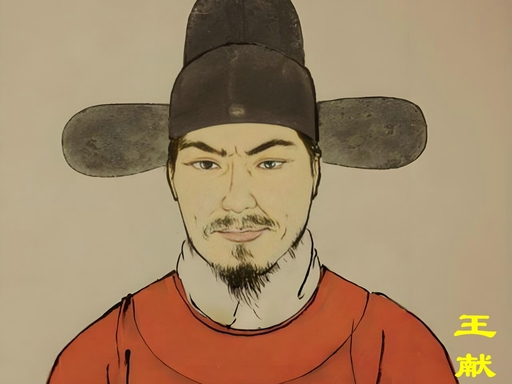
宁可食无肉，不可居无竹
郑燮 (清代书画家/竹石造园代表)
核心成就：营扬州板桥园，以竹为核心造景，画竹咏竹融于园，彰显文人气节。
风格：清瘦挺拔，以竹喻人，重品格风骨。
风格：清瘦挺拔，以竹喻人，重品格风骨。
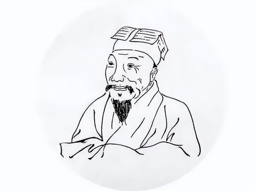
画舫录中，园亭盛景
李斗 (清代学者/园林文献家)
核心成就：著《扬州画舫录》，详实记录清代扬州园林盛况，为造园史研究留存珍贵史料。
风格：严谨详实，集园林文献之大成，重实证记录。
风格：严谨详实，集园林文献之大成，重实证记录。
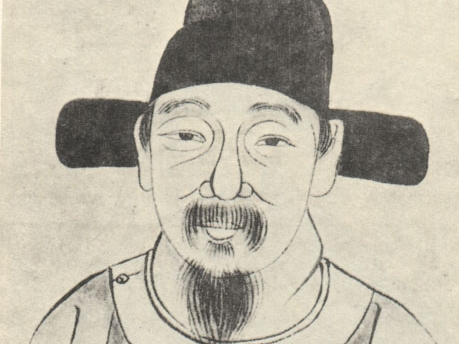
履园丛话，造园精要
钱泳 (清代学者/造园理论家)
核心成就：著《履园丛话》，系统总结造园、叠山、建筑技艺，梳理历代造园经验。
风格：博古通今，理论与实践并重，重技艺传承。
风格：博古通今，理论与实践并重，重技艺传承。
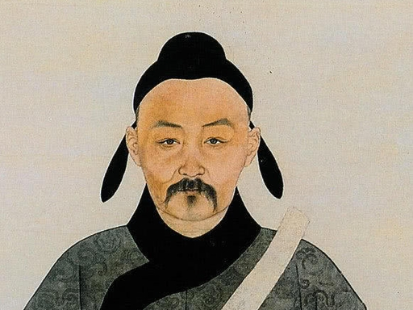
营造法原，匠作典范
姚承祖 (清代工匠/香山帮代表)
核心成就：香山帮匠人宗师，著《营造法原》，系统总结江南园林建筑营造技艺。
风格：技艺精湛，榫卯精密，传承江南匠作精髓。
风格：技艺精湛，榫卯精密，传承江南匠作精髓。
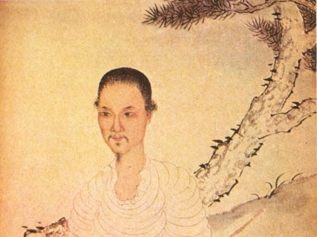
蒯鲁班手，巧夺天工
蒯祥 (明代工匠/皇家造园巨匠)
核心成就：香山帮鼻祖，主持紫禁城、西苑等皇家园林营建，榫卯技艺冠绝当世。
风格：恢弘大气，精工细作，奠定皇家园林建筑范式。
风格：恢弘大气，精工细作，奠定皇家园林建筑范式。
东园西园，留园之源
徐泰时 (明代官员/留园奠基者)
核心成就：营建苏州东园（留园前身），融山水园林与宅第为一体，布局精巧多变。
风格：疏密有致，山水相依，开留园造园之先河。
风格：疏密有致，山水相依，开留园造园之先河。
拙政之初，归隐田园
王献臣 (明代官员/拙政园初建者)
核心成就：罢官归里营建拙政园，取“拙者为政”之意，以水为核心造隐逸之境。
风格：疏朗自然，亭台临水，尽显文人归隐理想。
风格：疏朗自然，亭台临水，尽显文人归隐理想。
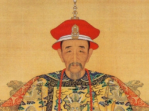
寒碧山庄，留园之盛
刘恕 (清代官员/留园扩建者)
核心成就：重修东园并改名寒碧山庄（留园），增植花木、叠山理水，丰富园景层次。
风格：精巧雅致，建筑布局严谨，花木错落成趣。
风格：精巧雅致，建筑布局严谨，花木错落成趣。
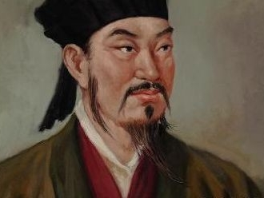
留园再兴，中西合璧
盛宣怀 (清代实业家/留园修缮者)
核心成就：购得留园并大规模修缮扩建，融入西方造园元素，拓展园林功能。
风格：中西交融，传统形制与现代功能并重。
风格：中西交融，传统形制与现代功能并重。
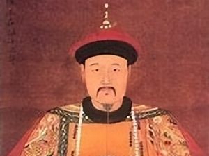
耦园之中，佳偶天成
汪士元 (清代官员/耦园修缮者)
核心成就：修缮苏州耦园，取“佳偶天成”之意，完善东西对称的布局格局。
风格：精巧对称，园景呼应，寓意夫妻和美。
风格：精巧对称，园景呼应，寓意夫妻和美。
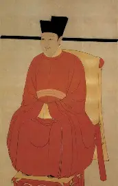
网师初建，渔隐之趣
宋宗元 (清代官员/网师园初建者)
核心成就：营建苏州网师园，取“渔隐”之意，以小园见大境，尽显江南水乡之趣。
风格：小巧精致，以水为中心，小中见大意境深远。
风格：小巧精致，以水为中心，小中见大意境深远。
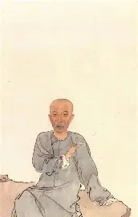
苏邻小筑，文人雅居
李鸿裔 (清代官员/环秀山庄修缮者)
核心成就：修缮苏州环秀山庄（苏邻小筑），保留戈裕良经典假山，优化园景布局。
风格：以山为主，山水相映，假山独步江南。
风格：以山为主，山水相映，假山独步江南。
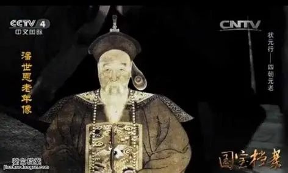
留园之风，世家传承
潘世恩 (清代状元/留园文化传承者)
核心成就：潘氏家族居留园期间，广邀文人雅集，传承园林文化，丰富园藏书画。
风格：世家风范，文气浓郁，园林与书香相融。
风格：世家风范，文气浓郁，园林与书香相融。
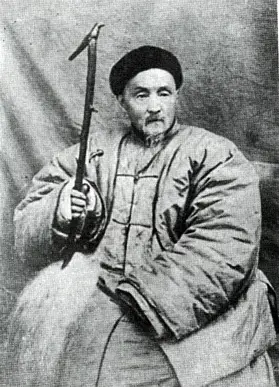
曲园之中，春在堂前
俞樾 (清代学者/曲园主人)
核心成就：营建苏州曲园，著《春在堂全集》，园以学术研究、讲学为核心功能。
风格：简朴雅致，书卷气浓，小园见治学之趣。
风格：简朴雅致，书卷气浓，小园见治学之趣。
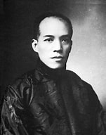
饮冰室中，思想启蒙
梁启超 (近代思想家/饮冰室造园者)
核心成就：营建天津饮冰室，融中西造园风格，以园为思想传播、学术交流之地。
风格：中西合璧，重思想启蒙，园林承载文化革新。
风格：中西合璧，重思想启蒙，园林承载文化革新。
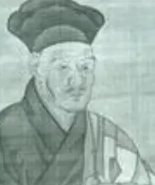
山水之间，自有天地
江雪舟 (明代造园名家)
核心成就：擅长理水叠山，布局精巧自然，多作江南文人小园。
风格：清雅简约，重意境营造。
风格：清雅简约，重意境营造。
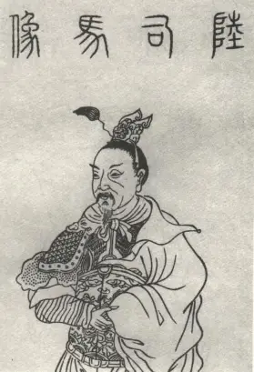
园无石不秀，居无竹不雅
陆云帆 (清代叠山名师)
核心成就：善用湖石造景，层次分明，虚实相生。
风格：雄浑大气，咫尺山林。
风格：雄浑大气，咫尺山林。
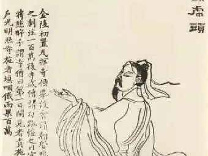
一步一景，一画一天
苏慕卿 (明代文人造园家)
核心成就：将诗词意境融入园林，曲径通幽，移步换景。
风格：文人气息浓厚，含蓄雅致。
风格：文人气息浓厚，含蓄雅致。
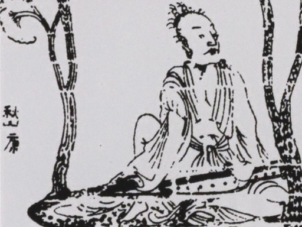
虽由人作，宛若天成
柳清和 (清代造园师)
核心成就：精通花木配置，四季有景，自然和谐。
风格：清新自然，生机盎然。
风格：清新自然，生机盎然。
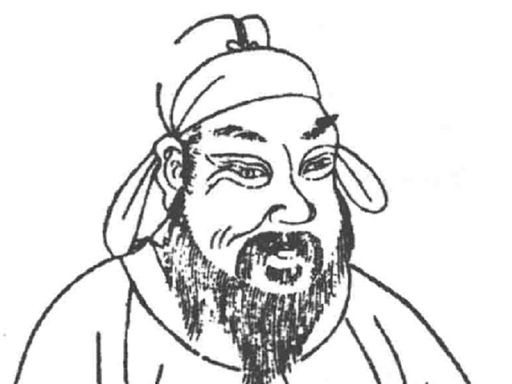
藏山隐水，静气养心
秦砚秋 (明代园林学者)
核心成就：著有园林杂记，推崇隐逸文化与园居生活。
风格：淡泊宁静，古朴简约。
风格：淡泊宁静，古朴简约。
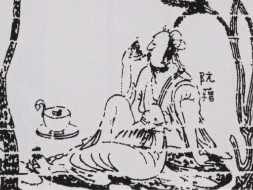
水随山转，山因水活
方静川 (清代理水名家)
核心成就：以活水造园，动静结合，水景变化丰富。
风格：灵动流畅，自然成趣。
风格：灵动流畅，自然成趣。
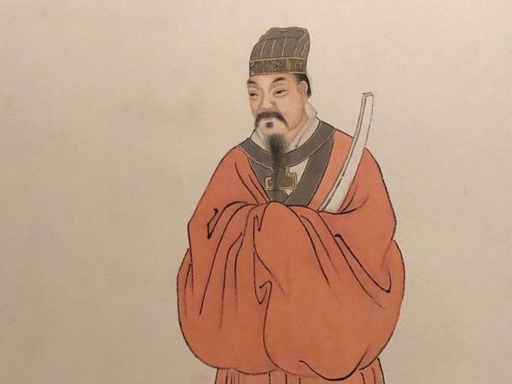
亭台藏画意，草木入诗心
温竹庭 (明代造园名士)
核心成就：建筑与自然相融，亭台楼阁位置精妙。
风格：古朴典雅，诗画满园。
风格：古朴典雅，诗画满园。
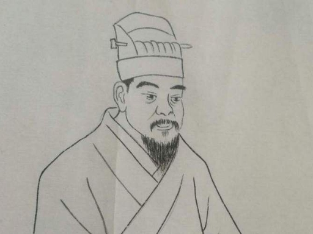
心随景远，意与天游
顾砚书 (清代文人造园家)
核心成就：以书入园，以画构景，文化气息浓厚。
风格：书卷气十足，清雅脱俗。
风格：书卷气十足，清雅脱俗。
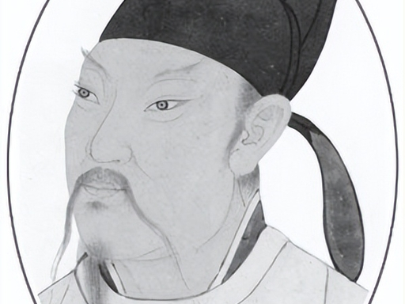
园以画意立，景随心境生
沈石田 (明代吴门造园画家)
核心成就：开创山水画意造园法，将平远山水格局融入江南宅园。
风格：温润平和，疏朗自然，田园意趣浓厚。
风格：温润平和，疏朗自然，田园意趣浓厚。
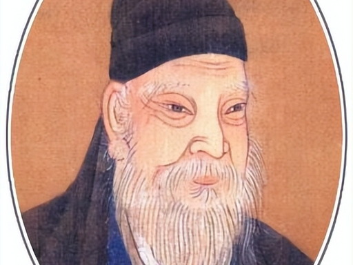
叠山藏曲径，引水绕闲亭
文伯仁 (明代山水造园名家)
核心成就：擅长曲折空间布局，打造幽深回转的园林秘境。
风格：幽深内敛，移步换景，层次繁复精巧。
风格：幽深内敛，移步换景，层次繁复精巧。
一园藏四季，草木见春秋
周亮工 (明末清初园林花木大家)
核心成就：系统研究园林花木配植，打造四季常绿有景可赏的园林。
风格：生机盎然，四季分明，草木与建筑共生。
风格：生机盎然，四季分明，草木与建筑共生。
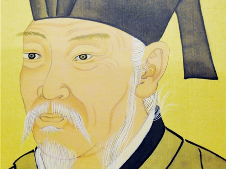
归隐林泉处，清风满故园
归庄 (明末隐逸造园文人)
核心成就：营建草堂别业，将家国情志融入园林山水营造。
风格：简素清逸，气节风骨，淡泊隐逸。
风格：简素清逸，气节风骨，淡泊隐逸。
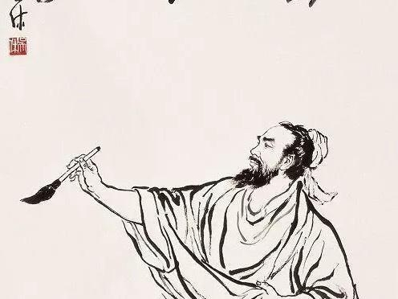
藏书藏丘壑，闲园养性灵
朱彝尊 (清代学者藏书家)
核心成就：营建曝书亭园林，将藏书治学与园居生活完全结合。
风格：书卷浓郁，安静雅致，治学与闲居相融。
风格：书卷浓郁，安静雅致，治学与闲居相融。
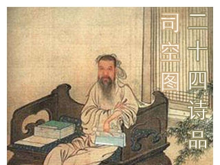
淡墨写山水，清韵入园林
恽寿平 (清代花鸟造园画家)
核心成就：以没骨花鸟画意造园，花木布置温润灵动。
风格：清雅秀逸，温润柔和，自然灵动脱俗。
风格：清雅秀逸，温润柔和，自然灵动脱俗。
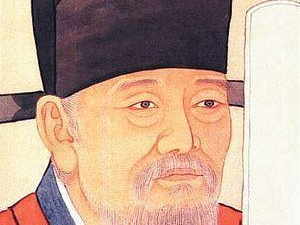
江南烟雨后，闲园听晚风
王士祯 (清代文坛领袖/园居大家)
核心成就：营建渔洋别业，以神韵诗派美学指导园林整体营造。
风格：朦胧悠远，诗意含蓄，江南韵味十足。
风格：朦胧悠远，诗意含蓄，江南韵味十足。
叠山如真岳，引水若江湖
石熙 (清代职业叠山匠师)
核心成就：擅长大型湖石假山营造，空间气势雄浑开阔。
风格：大气磅礴，虚实相生，咫尺千里山林气势。
风格：大气磅礴，虚实相生，咫尺千里山林气势。
亭台依草木，风月入闲庭
蒋廷锡 (清代宫廷造园画家)
核心成就：参与皇家御园设计，将宫廷雅致审美融入民间造园。
风格：端庄雅致，富丽清幽，皇家文人双韵兼具。
风格：端庄雅致，富丽清幽，皇家文人双韵兼具。
简园藏大道，静处养初心
方苞 (清代桐城派散文家)
核心成就：以古文简洁章法营造园林，反对繁复奢靡，推崇简约自然。
风格：简洁方正，质朴淡雅，文气内敛厚重。
风格：简洁方正，质朴淡雅，文气内敛厚重。
山水藏文气，闲园寄素心
刘大櫆 (清代桐城造园文人)
核心成就：将古文气韵融入园林空间节奏，开合收放布局有序。
风格：气韵流畅，方正清雅，极简文人风骨。
风格：气韵流畅，方正清雅，极简文人风骨。
登高观山水，闲坐悟园心
姚鼐 (清代桐城派集大成者)
核心成就：总结园林阴阳刚柔美学，完善文人造园审美体系。
风格：刚柔并济，中正平和，文化底蕴深厚。
风格：刚柔并济，中正平和，文化底蕴深厚。
怪石藏幽趣，闲园见本心
罗聘 (清代扬州八怪造园家)
核心成就：擅长奇石怪景造园，打破传统规整园林格局。
风格：奇趣灵动，不拘礼法，野逸脱俗。
风格：奇趣灵动，不拘礼法，野逸脱俗。
竹石依茅舍，清风满野园
黄慎 (清代扬州画派造园名家)
核心成就：打造市井山野结合的平民园林，打破文人园林壁垒。
风格：质朴野逸，烟火气浓，自然随性。
风格：质朴野逸，烟火气浓，自然随性。
墨梅疏竹里，独守一园清
金农 (清代书画造园大家)
核心成就：以梅竹为核心造景，极简留白园林空间开创者。
风格：孤高清冷，极简留白，意境孤绝悠远。
风格：孤高清冷，极简留白，意境孤绝悠远。
残山剩水意，闲园自在心
高凤翰 (清代左手书画造园家)
核心成就：以残缺写意美学造园，推崇自然野趣不事雕琢。
风格：苍劲古朴，写意自然，残缺见意境。
风格：苍劲古朴，写意自然，残缺见意境。
芦荡藏闲趣，秋水绕园亭
边寿民 (清代水乡造园画家)
核心成就：将江南芦苇水荡自然风貌融入城市园林营造。
风格：水乡野逸，清冷空灵，秋日意境绝佳。
风格：水乡野逸，清冷空灵，秋日意境绝佳。
考古知园史，循古造新境
汪中 (清代园林考据学者)
核心成就：考据历代园林沿革历史，以古制指导当代园林修复。
风格：严谨复古，古韵悠长，古意新生相融。
风格：严谨复古，古韵悠长，古意新生相融。
一园藏天地，万卷伴闲居
洪亮吉 (清代学者园林营造者)
核心成就：营建藏书园林，将学术研究、诗文创作与园居结合。
风格：书香浓厚，安静沉稳，治学闲居一体。
风格：书香浓厚，安静沉稳，治学闲居一体。
冷月疏林里，孤园寄远思
黄景仁 (清代诗人园林营造者)
核心成就：以清冷诗意美学造园，打造含蓄感伤的诗意园林。
风格：清冷婉约，诗意绵长，意境幽深动人。
风格：清冷婉约，诗意绵长，意境幽深动人。
园理循古法，心境逐自然
恽敬 (清代阳湖派园林理论家)
核心成就：融合桐城与江南造园理念，开创折中造园美学。
风格：开合有度，中正雅致，兼容南北造园特色。
风格：开合有度，中正雅致，兼容南北造园特色。
随性安闲处，园景自天成
张问陶 (清代性灵诗派造园家)
核心成就：将性灵说融入造园，反对刻意雕琢，推崇本心自然。
风格：随性自然，天真闲逸，不拘古典规制。
风格：随性自然，天真闲逸，不拘古典规制。
闲亭藏秀色，柔景入诗心
改琦 (清代仕女画派造园家)
核心成就：以柔美秀逸仕女画意造园，园林布置温婉细腻。
风格：秀逸柔美，细腻雅致，婉约江南韵味。
风格：秀逸柔美，细腻雅致，婉约江南韵味。
疏影横斜里，闲园藏温柔
费丹旭 (清代晚清书画造园名家)
核心成就：擅长梅影疏林造景，光影留白营造朦胧园林意境。
风格：朦胧柔和，疏朗温柔，光影意境绝佳。
风格：朦胧柔和，疏朗温柔，光影意境绝佳。
笔墨藏风骨，园景见本心
何绍基 (清代晚清书法造园大家)
核心成就：以书法笔意规划园林建筑线条，刚劲流畅布局。
风格：刚劲雅致，线条流畅，文人风骨浓郁。
风格：刚劲雅致，线条流畅，文人风骨浓郁。
黔山融水意，古园出新境
郑珍 (清代西南地域造园名家)
核心成就：融合西南山地风貌与江南造园技艺，开创地域园林。
风格：山韵厚重，水意灵动，南北风格交融。
风格：山韵厚重，水意灵动，南北风格交融。
藏书藏丘壑，古韵满闲园
莫友芝 (清代西南藏书造园家)
核心成就：西南地区园林藏书开创者，古建古籍与园林共生。
风格：古朴厚重，古韵悠长，地域文化浓厚。
风格：古朴厚重，古韵悠长，地域文化浓厚。
金石藏古意，花木焕新生
赵之谦 (晚清金石书画造园家)
核心成就：将金石古朴古意融入园林，古建花木新生结合。
风格：古朴厚重，艳丽清雅，金石古韵十足。
风格：古朴厚重，艳丽清雅，金石古韵十足。
世家藏雅韵，闲园养清欢
翁同龢 (晚清帝师世家造园家)
核心成就：营建常熟翁氏宅园，世家文人园林集大成之作。
风格：端庄雅致，世家风范，文气厚重内敛。
风格：端庄雅致，世家风范，文气厚重内敛。
金石融花木，苍劲入闲园
吴昌硕 (晚清海派书画造园宗师)
核心成就：海派园林开创者，将金石苍劲画意融入花木山石造景。
风格：苍劲古朴，雄浑雅致，海派江南新韵。
风格：苍劲古朴，雄浑雅致，海派江南新韵。
田园真意趣，草木见天真
齐白石 (近代国画大师造园爱好者)
核心成就：以田园民间画意造园，打破传统文人高雅壁垒。
风格：质朴天真，市井田园，生机野趣盎然。
风格：质朴天真，市井田园，生机野趣盎然。
浑厚华滋境，深山入小园
黄宾虹 (近代山水园林美学宗师)
核心成就：以浑厚华滋山水意境造园，重构古典园林深层美学。
风格：浑厚幽深，气韵厚重，山水意境深邃。
风格：浑厚幽深，气韵厚重，山水意境深邃。
新旧融一境，古园焕新声
陈师曾 (近代中西园林融合先驱)
核心成就：率先融合中西园林空间理念，推动古典园林现代化。
风格：中西交融，古今合一，简洁现代雅致。
风格：中西交融，古今合一，简洁现代雅致。
笔墨破陈法，古园开新境
刘海粟 (近代革新派园林理论家)
核心成就：打破古典园林守旧规制，推动园林艺术革新发展。
风格：大胆奔放，古今革新，色彩气韵生动。
风格：大胆奔放，古今革新，色彩气韵生动。
人间烟火暖，闲园见初心
丰子恺 (近代生活美学造园家)
核心成就：将人间生活烟火融入园林，打造温暖治愈闲居园林。
风格：简约温暖，平淡天真，生活气息浓厚。
风格：简约温暖，平淡天真，生活气息浓厚。
万里山河意，一园藏风云
张大千 (近代大千园林营造大家)
核心成就：营建大风堂园林，融合敦煌、山水、中西多重造园风格。
风格：恢弘大气，富丽雅致，包罗万象意境。
风格：恢弘大气，富丽雅致，包罗万象意境。
险绝藏丘壑，刚劲立园魂
潘天寿 (近代写意园林美学大师)
核心成就：以险绝构图、刚劲骨法造园，重构园林空间骨架。
风格：刚劲险绝，方正大气，骨力意境十足。
风格：刚劲险绝，方正大气，骨力意境十足。
烟雨江南梦，闲园藏远山
傅抱石 (近代江南园林意境宗师)
核心成就：以抱石皴烟雨山水意境，重新诠释江南园林朦胧美。
风格：烟雨朦胧，温润悠远，江南诗意极致。
风格：烟雨朦胧，温润悠远，江南诗意极致。
墨韵藏山水，静园见生机
李可染 (近代山水园林革新大家)
核心成就：将明暗光影理念融入古典园林，打造动静光影园林。
风格：厚重静谧，光影灵动，墨韵生机兼具。
风格：厚重静谧，光影灵动，墨韵生机兼具。
云水绕丘壑，闲园逐清风
陆俨少 (近代山水园林空间大师)
核心成就：以云水流动章法规划园林动线，空间流畅灵动。
风格：云水灵动，疏朗流畅，山水气韵生动。
风格：云水灵动，疏朗流畅，山水气韵生动。
岭南藏绿意，古园焕新生
关山月 (近代岭南园林开创大家)
核心成就：融合岭南湿热自然风貌，打造南方特色现代园林。
风格：绿意盎然，岭南温润，南北园林交融。
风格：绿意盎然，岭南温润，南北园林交融。
苍松藏峻岭，活水绕闲园
黎雄才 (近代岭南山水造园名家)
核心成就：将岭南山林峻岭风貌融入城市园林理水叠山。
风格：苍劲雄浑，岭南野逸，山水气势开阔。
风格：苍劲雄浑，岭南野逸，山水气势开阔。
宋韵藏今境，闲园守古心
谢稚柳 (近代宋韵园林复原大家)
核心成就：深耕宋代园林美学，复原宋代雅致简约造园范式。
风格：清雅宋韵，简约内敛，古韵雅致悠长。
风格：清雅宋韵，简约内敛，古韵雅致悠长。
丹青焕古木，清韵满闲庭
陈佩秋 (近代花鸟园林美学大家)
核心成就：以宋画花鸟意境规划园林花木，草木布置雅致灵动。
风格：清丽雅致，花鸟灵动，宋韵江南意境。
风格：清丽雅致，花鸟灵动，宋韵江南意境。
笔墨藏儒雅，闲园守古风
启功 (近代书法园林文化大家)
核心成就：以书法儒雅风骨指导皇家、文人园林文化传承。
风格：儒雅端庄，温润古朴，传统文化底蕴深厚。
风格：儒雅端庄，温润古朴，传统文化底蕴深厚。
黑白分天地，线条构园境
吴冠中 (近代中西园林空间宗师)
核心成就：以现代构成、黑白线条重构古典园林空间骨架。
风格：极简现代，中西合一，线条意境极致简约。
风格：极简现代，中西合一，线条意境极致简约。
焦墨藏丘壑，古园守本真
张仃 (近代焦墨园林美学大家)
核心成就：以焦墨苍劲骨法，梳理古典园林原始自然本真。
风格：苍劲质朴，回归本真，古韵厚重纯粹。
风格：苍劲质朴，回归本真，古韵厚重纯粹。
童心藏丘壑，趣意满闲园
黄永玉 (近代趣味园林革新大家)
核心成就：打破古典园林严肃刻板，打造趣味活泼现代园林。
风格：活泼有趣，自由灵动，童真创意十足。
风格：活泼有趣，自由灵动，童真创意十足。
万象融一境，美意满园林
韩美林 (近代现代园林美学大家)
核心成就：融合传统纹样与现代审美，打造文化创意城市园林。
风格：典雅活泼，古今交融，文化艺术感浓厚。
风格：典雅活泼，古今交融，文化艺术感浓厚。
诗画融园景，风雅续古今
范曾 (近代文人园林传承大家)
核心成就：延续千年文人造园文脉，诗书画园一体传承创新。
风格：儒雅风雅，古今延续，文人意境纯粹正统。
风格：儒雅风雅，古今延续，文人意境纯粹正统。
静水涵山影，闲亭纳晚风
林砚之 (明代文人造园家)
核心成就：善造静水园景，以倒影成画，意境清和。
风格：宁静平和，简约含蓄，自然成趣。
风格：宁静平和，简约含蓄，自然成趣。
花木含春意，亭台隐书香
苏晚棠 (清代园艺名家)
核心成就：精于花木搭配，四季有景，步移景异。
风格：温润雅致，生机盎然，文人气息浓厚。
风格：温润雅致，生机盎然，文人气息浓厚。
石瘦存古意，云闲入园来
陆松风 (明代叠山名师)
核心成就：以瘦、皱、透、漏为则，叠山古朴苍劲。
风格：苍古疏朗，气韵高古，咫尺山林。
风格：苍古疏朗，气韵高古，咫尺山林。